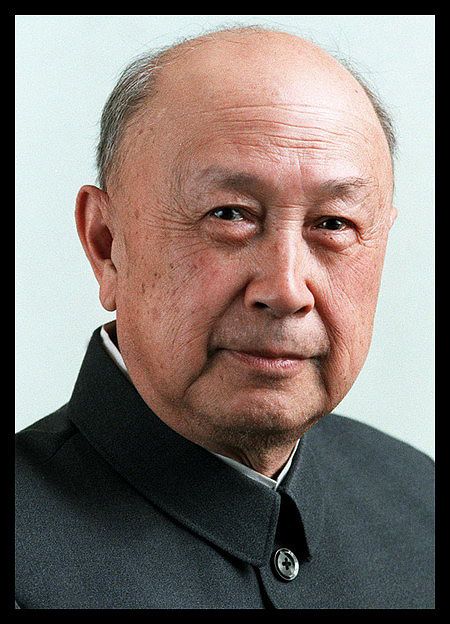

英雄人物-钱学森
 钱学森，男，汉族，浙江省杭州市人。中国共产党优秀党员、忠 诚的共产主义战士、享誉海内外的杰出科学家和中国航天事业的奠 基人，中国两弹一星功勋奖章获得者之一。曾任美国麻省理工学院 教授、加州理工学院教授，曾担任中国人民政治协商会议第六、七 、八届全国委员会副主席、中国科学技术协会名誉主席、全国政协 副主席等重要职务。
1911年 12月11日生于上海。三岁时随父母到北京，在北京度过了童年与少年时期。
1929年 考入交通大学学习。
1934年 交通大学机械工程系毕业，同年考取清华赴美留学公费生。
1935年 留学美国，入麻省理工学院航空系学习。
1936年 获麻省理工学院航空工程硕士学位，后转入加州理工学院航空系学习。
1939年 获美国加州理工学院航空、数学博士学位。
1943年 任加州理工学院助理教授。
1945年 任加州理工学院副教授。
1947年 任麻省理工学院教授。
1949年 任加州理工学院喷气推进中心主任、教授。
1954年 《工程控制论》英文版出版，该书俄文版、德文版、中文版分别于1956年、1957年、1958年出版。1980年《工程控制论》（修订版）出版。 该年在美国已经生活了20年 1955年 返回祖国。 1956年 任中国科学院力学研究所所长、研究员。在力学所工作到1972年前后。在政协第二届全国委员会第二次全体会议上，被增选为政协第二届全国委员会委员。 1957年 获中国科学院自然科学奖（1956年度）一等奖。 当选中国力学学会第一届理事会理事长。1982年当选为中国力学学会名誉理事长。任国防部第五研究院院长，兼任该院一分院（即今天的中国运载火箭技术研究院）院长。在中国科学院第二次学部委员（院士）大会上，被增聘为中国科学院学部委员（院士）。 在法国巴黎召开的国际自动控制联合会成立大会上，当选为该会第一届理事会常务理事。
1958年 任中国科学技术大学近代力学系主任。经杜润生、杨刚毅介绍，加入中国共产党。 1959年 当选为第二届全国人民代表大会代表。并相继当选为第三、四、五届全国人民代表大会代表。 1960年 任国防部第五研究院副院长，并不再兼任该院一分院院长。从此，钱学森的主要职务一直为副职，由第五研究院副院长，到第七机械工业部副部长，再到国防科学技术委员会副主任等，专司中国国防科学技术发展的重大技术问题。
1961年 当选为中国自动化学会第一届理事会理事长。 1962年 《物理力学讲义》出版。 1963年 《星际航行概论》出版。 1965年 任第七机械工业部副部长。 1968年，兼任中国人民解放军第五研究院（即今天的中国空间技术研究院）院长。 1969年 当选为中国共产党第九次全国代表大会代表和第九届中央委员会候补委员。并相继当选为第十、十一、十二、十三、十四、十五次全国代表大会代表，第十、十一、十二届中央委员会候补委员。
1970年 任国防科学技术委员会副主任，并不再兼任中国人民解放军第五研究院院长。 1979年 在中美正式建立外交关系的当年，获美国加州理工学院“杰出校友奖”(Distinguished Alumni Award)。但钱学森没有到美国接受这份荣誉。直到2001年钱老90岁生日时，钱老在美国的好友Frank E.Marble教授受美国加州理工学院校长D.Baltimore委托，专程到北京将“杰出校友奖”的奖状和奖章当面颁发给钱老。当选中国宇航学会名誉理事长。
1980年 当选中国科学技术协会第一届全国委员会副主席；1986年当选中国科学技术协会第三届全国委员会主席； 1991年在中国科学技术协会第四届全国委员会第一次全体会议上，被授予中国科学技术协会名誉主席称号。当选中国空气动力学研究会（1989年更名为中国空气动力学会）名誉理事长。当选中国系统工程学会名誉理事长。
1982年 任国防科学技术工业委员会科学技术委员会副主任。《论系统工程》出版，1988年《论系统工程》（增订版）出版。 1984年 在中国科学院第五次学部委员（院士）大会上，被增选为中国科学院主席团执行主席。1992年，在中国科学院第六次学部委员（院士）大会上，被聘请为中国科学院学部主席团名誉主席。
1985年 钱学森因对中国战略导弹技术的贡献，作为第一获奖者和屠守锷、姚桐斌、郝复俭、梁思礼、庄逢甘、李绪鄂等获全国科技进步特等奖。 1986年 在政协第六届全国委员会第四次全体会议上，被增选为政协第六届全国委员会副主席，并相继当选为政协第七、第八届全国委员会副主席。
1988年兼任政协第七届全国委员会科学技术委员会主任。获（1985年度）国家科技进步奖特等奖。 《关于思维科学》出版。 1987年 被聘为国防科学技术工业委员会科学技术委员会高级顾问。《社会主义现代化建设的科学和系统工程》出版。
1988年 《论人体科学》出版。《创建人体科学》、《人体科学与现代科技发展纵横观》和《论人体科学与现代科技》分别于1989年、1996年、1998年出版。 1989年 获国际技术与技术交流大会和国际理工研究所授予的“W．F．小罗克韦尔奖章”“世界级科学与工程名人”和“国际理工研究所名誉成员”称号。 1991年 获国务院、中央军委授予的“国家杰出贡献科学家”荣誉称号和中央军委授予的一级英雄模范奖章。《钱学森文集（1938～1956）》出版。
1994年 在中国工程院第一次院士大会上，被选聘为中国工程院院士。《论地理科学》出版。《城市学与山水城市》出版， 1996年《城市学与山水城市》（增订版）出版。1999年，作为上述两书的续集《山水城市与建筑科学》出版。《科学的艺术与艺术的科学》出版。
1995年 获何梁何利基金颁发的首届（1994年度）“何梁何利基金优秀奖”（后改称“何梁何利基金科学与技术成就奖”） 1996年 在交通大学百年校庆之际，由江泽民总书记题写馆名，第一次以中国科学家的名字命名的图书馆——钱学森图书馆，在他的母校西安交大隆重举行命名仪式。
1998年 被聘为解放军总装备部科学技术委员会高级顾问。在中国科学院第九次院士大会和中国工程院第四次院士大会上，被授予“中国科学院资深院士”“中国工程院资深院士”称号。 1999年 获中共中央、国务院、中央军委颁发的“两弹一星功勋奖章”。
2000年 《钱学森手稿（1938～1955）》出版。 2001年 获霍英东奖金委员会颁发的第二届“霍英东杰出奖”（中国地区）。经国际小行星中心和国际小行星命名委员会审议批准，将中国科学院紫金山天文台发现的国际编号为3763号小行星，正式命名为“钱学森星”。《论宏观建筑与微观建筑》出版。《第六次产业革命通信集》出版。《创建系统学》出版。12月11日江泽民看望钱学森，李岚清副总理一同看望。此前，1995年、1996年和1999年江泽民曾先后三次到钱学森家中看望他。
2001年 记录钱学森光辉历程的“钱学森业绩馆”日前在其母校——西安交大开馆，并面向社会开放。馆中收藏展出的有钱学森１９２９年－１９３４年在交大机械工程系铁道专业学习时的水利工程学试卷、钱学森赠给母校的一批珍贵手稿、著作《钱学森手稿》、《论宏观建筑与微观建筑》、《创新系统学》以及介绍和反映他科学思想、科技成就及辉煌人生历程的论著及其他作品。
2008年2月，被评为“2007年感动中国年度人物”。 2009年9月14日，被评为100位新中国成立以来感动中国人物之一。
2009年10月31日上午8时6分，在北京逝世。享年98岁。